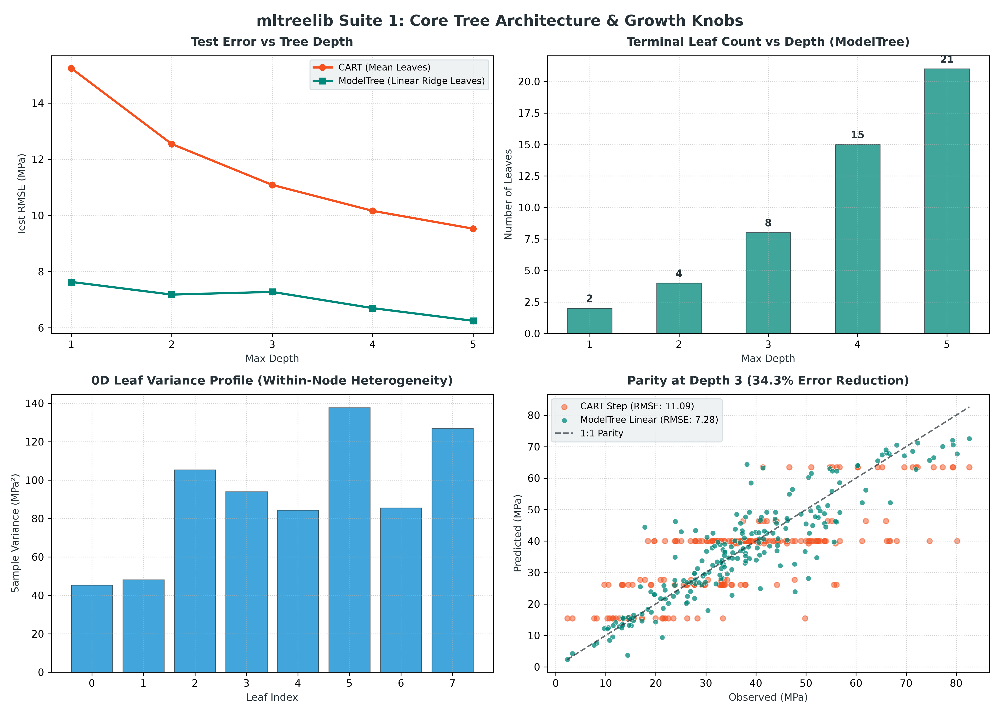

Core Tree Architecture, Two-Control Decoupling & Growth Knobs¶
This benchmark unifies the architectural mechanics of mltreelib: decoupling between greedy tree topology growth and terminal leaf models, 0D distributional profiles across partitioned leaves, and hypothesis-driven structural break gating via the Chow test.
Companion executable script:
- benchmarks/suites/core_tree_architecture.py (uv run python benchmarks/suites/core_tree_architecture.py)
1. Domain Context & Mathematical Formulation¶
Classical decision tree libraries (such as scikit-learn or rpart) couple recursive partitioning directly to scalar leaf statistics (mean, median, or class frequency). This introduces two severe structural limitations:
- Parameter Explosion and Inflexible Solvers: Fitting linear models at every candidate split threshold across all features scales as \(O(K \cdot N \cdot P^2)\), creating an unacceptable computational bottleneck.
- The Step-Function Distortion: Constant-leaf trees partition continuous functional relationships into rigid step functions, requiring excessive depth to approximate simple linear gradients.
mltreelib decouples global topology search from local terminal leaf parameter optimization:
where: - \(\mathcal{T} = \{R_1, \dots, R_M\}\) denotes the orthogonal partition of the feature space into \(M\) disjoint terminal regions. - \(\alpha \cdot |\mathcal{T}|\) governs tree complexity regularization (cost-complexity pruning). - \(\theta_m\) represents the local parameter vector (e.g. Ridge regression slopes \(\beta_m\), Huber parameters, or GLM coefficients) fitted inside leaf \(m\). - \(\mathcal{R}(\theta_m) = \lambda_1 \|\theta_m\|_1 + \frac{\lambda_2}{2} \|\theta_m\|_2^2\) enforces local regularization.
flowchart LR
subgraph MT["ModelTree (Topology & Partitioning)"]
direction TB
A["Input Data (X, y)"] --> B{"Recursive Split Search\n(Scalar Variance Reduction)"}
B --> C{"Stopping Criteria\n(max_depth, min_rows, Chow Gate)"}
C --> D["Partitioned Terminal Nodes"]
end
subgraph LC["LeafControl (Terminal Estimators)"]
direction TB
E["Leaf Specification\n(Linear Ridge, Huber, Quantile, GLM)"]
F["Regularization Knobs\n(l1, l2, tau, leaf_monotone)"]
E --> G["Decoupled Leaf Solver Engine"]
F --> G
end
D ==> G
G --> H["Fitted Piecewise Model Tree\n+ 0D Distributional Stats Dictionary"]
classDef dataBox fill:#1e293b,stroke:#475569,stroke-width:2px,color:#ffffff;
classDef splitBox fill:#b45309,stroke:#d97706,stroke-width:2px,color:#ffffff;
classDef nodeBox fill:#1e3a5f,stroke:#2b4c7e,stroke-width:2px,color:#ffffff;
classDef leafSpec fill:#065f46,stroke:#059669,stroke-width:2px,color:#ffffff;
classDef solverBox fill:#4c1d95,stroke:#6d28d9,stroke-width:2px,color:#ffffff;
classDef finalBox fill:#0f766e,stroke:#14b8a6,stroke-width:2px,color:#ffffff;
class A dataBox;
class B,C splitBox;
class D nodeBox;
class E,F leafSpec;
class G solverBox;
class H finalBox;Next: section 2 applies this decoupling to real data, setting LeafControl apart from the tree's max_depth and min_rows.
2. Benchmark Study: Yeh (1998) Concrete Compressive Strength¶
We evaluate the architecture on the standard civil engineering benchmark: Yeh (1998) Concrete Compressive Strength (1,030 industrial concrete mixtures, 8 continuous ingredients; 80% train / 20% test).
from mltreelib import LeafControl, MetricsReport, ModelTree
from mltreelib.data import Dataset
# 1. Load benchmark dataset and split 80/20 without shuffling
ds = Dataset.load(
"concrete_compressive_strength", target="ConcreteCompressiveStrength"
)
train, test = ds.split(test_size=0.2, time=True)
# 2. Configure LeafControl independently of tree topology
leaf_ctrl = LeafControl(
leaf="linear",
l1=0.0,
l2=1e-3,
leaf_family="gaussian",
)
# 3. Configure ModelTree and inject leaf controls
model = ModelTree(
max_depth=3,
min_rows=25,
prune="none",
control=leaf_ctrl,
)
model.fit(train)
# 4. Measure holdout performance
preds = model.predict(test)
rep = MetricsReport("regression", y_true=test.y, y_pred=preds)
print(f"ModelTree Linear Leaves: RMSE = {rep['rmse']:.2f} MPa, R2 = {rep['r2']:.3f}, MAE = {rep['mae']:.2f} MPa")
Next: section 3 reports the same holdout RMSE across depths 1 to 5, set against a CART tree at each depth.
3. Empirical Results & Growth Knob Grid¶
# 3. Compare CART (mean leaves) and ModelTree (linear leaves) at depths 1 to 5
for depth in range(1, 6):
cart = ModelTree(leaf="mean", max_depth=depth, min_rows=20)
cart.fit(train)
cart_m = MetricsReport("regression", y_true=test.y, y_pred=cart.predict(test))
mt = ModelTree(leaf="linear", max_depth=depth, min_rows=20, l2=1e-3)
mt.fit(train)
mt_m = MetricsReport("regression", y_true=test.y, y_pred=mt.predict(test))
change = (mt_m["rmse"] - cart_m["rmse"]) / cart_m["rmse"] * 100
print(f"Depth {depth} -> CART RMSE {cart_m['rmse']:.2f} MPa (R2 {cart_m['r2']:.3f}) | "
f"ModelTree RMSE {mt_m['rmse']:.2f} MPa (R2 {mt_m['r2']:.3f}, {len(mt.leaves())} leaves) | "
f"change {change:+.1f}%")
Depth 1 -> CART RMSE 15.24 MPa (R2 0.180) | ModelTree RMSE 7.63 MPa (R2 0.794, 2 leaves) | change -49.9%
Depth 2 -> CART RMSE 12.54 MPa (R2 0.444) | ModelTree RMSE 7.18 MPa (R2 0.818, 4 leaves) | change -42.7%
Depth 3 -> CART RMSE 11.09 MPa (R2 0.566) | ModelTree RMSE 7.28 MPa (R2 0.813, 8 leaves) | change -34.3%
Depth 4 -> CART RMSE 10.16 MPa (R2 0.635) | ModelTree RMSE 6.70 MPa (R2 0.841, 15 leaves) | change -34.1%
Depth 5 -> CART RMSE 9.53 MPa (R2 0.679) | ModelTree RMSE 6.25 MPa (R2 0.862, 21 leaves) | change -34.4%
| Tree Depth | CART Holdout RMSE (MPa) | ModelTree Holdout RMSE (MPa) | Error Reduction (%) | Active Leaves |
|---|---|---|---|---|
| Depth 1 | 15.24 MPa | 7.63 MPa | -49.9% | 2 |
| Depth 2 | 12.54 MPa | 7.18 MPa | -42.7% | 4 |
| Depth 3 | 11.09 MPa | 7.28 MPa | -34.3% | 8 |
| Depth 4 | 10.16 MPa | 6.70 MPa | -34.1% | 15 |
| Depth 5 | 9.53 MPa | 6.25 MPa | -34.4% | 21 |

Key Quantitative Findings¶
- Immediate Accuracy Lift at Depth 1: A 1-split stump with linear leaves achieves 7.63 MPa RMSE, against 10.16 MPa for a depth-4 CART tree and 15.24 MPa for a depth-1 CART stump.
- Variance Reduction: At depth 3,
ModelTreeachieves 7.28 MPa RMSE and \(R^2 = 0.813\), capturing 81.3% of the variance compared to CART's 56.6%. - Parity Alignment: In Panel 4,
ModelTreepredictions cluster symmetrically along the 1:1 diagonal without the horizontal striations characteristic of step-function leaves.
Next: section 4 inspects the leaves of the depth-3 model fitted in section 2, because each leaf profile describes one terminal partition of that tree.
4. 0D Descriptive Leaf Statistics¶
Every terminal leaf in ModelTree computes a comprehensive 0D statistical profile over its assigned partition samples without extra passes. Access these profiles directly via leaf["stats"] or tree.leaf_stats():
leaves = model.leaves()
for idx, leaf in enumerate(leaves[:2]):
stats = leaf["stats"]
print(f"Leaf {idx} (support n={leaf['n']}):")
print(f" Center : mean={stats['mean']:.2f}, median={stats['median']:.2f}")
print(f" Spread : variance={stats['var']:.2f}, MAD={stats['mad']:.2f}, IQR={stats['iqr']:.2f}")
print(f" Shape : skewness={stats['skew']:.2f}, kurtosis={stats['kurtosis']:.2f}")
Leaf 0 (support n=143):
Center : mean=15.44, median=14.37
Spread : variance=45.41, MAD=4.15, IQR=8.96
Shape : skewness=1.10, kurtosis=1.79
Leaf 1 (support n=47):
Center : mean=27.67, median=25.69
Spread : variance=48.11, MAD=4.43, IQR=10.67
Shape : skewness=0.41, kurtosis=-0.51
You can predict these 0D moments row-wise at test time using predict(X, kind="median"|"var"|"stats").
Next: section 5 adds a Chow test gate that decides whether a split is kept, using the same leaf_ctrl and training data from section 2.
5. Chow Structural Break Test Hypothesis Gating¶
Standard trees rely purely on empirical gain thresholds (min_gain) or post-pruning to prevent overfitting. ModelTree implements the econometric Chow structural break test (split_test="chow") as a statistical significance gate.
Hypothesis Test Formulation¶
- Null Hypothesis (\(H_0\)): Regression coefficients are invariant across child partitions: $\(\beta_L = \beta_R = \beta_P\)$
- Alternative Hypothesis (\(H_1\)): Significant parameter instability exists across the candidate split: $\(\beta_L \ne \beta_R\)$
The test statistic follows an exact Snedecor's \(F\)-distribution under \(H_0\): $\(F_{\text{Chow}} = \frac{(\text{RSS}_P - (\text{RSS}_L + \text{RSS}_R)) / k}{(\text{RSS}_L + \text{RSS}_R) / (N - 2k)} \sim F(k, \, N - 2k)\)$ where \(k = P + 1\) is the number of estimated parameters (features plus intercept).
If the \(p\)-value exceeds split_alpha (e.g. \(\alpha = 0.01\)), the null hypothesis of structural stability is retained, and subtree branching is automatically terminated:
tree_chow = ModelTree(
max_depth=5,
min_rows=25,
split_test="chow",
split_alpha=0.01,
control=leaf_ctrl,
)
tree_chow.fit(X_train, y_train, col_names=feature_names)
This prevents the tree from creating spurious subtrees where local regressions show no statistically significant parameter shift.
Operational Limitations & Failure Modes¶
- High-Dimensional Parameter Degeneracy (\(P > N_{\text{leaf}}\)):
Fitting multivariate linear leaves requires sufficient sample support per terminal node. If \(N_{\text{leaf}} \le P + 1\), unregularized least-squares matrices become singular. Set
l2 > 0(e.g.l2=0.01) or enforcemin_rows >= 2 * (P + 1)inModelTree. - Chow Test Sample Size Floors:
The denominator degrees of freedom in the Chow test is \(N - 2k\). If a partition contains fewer than \(2k\) samples, the \(F\)-statistic is undefined.
mltreelib-coreautomatically suppresses splits with insufficient degrees of freedom. - Boundary Discontinuity: While linear leaves provide continuous predictions within each partitioned hyper-rectangle, predictions across split boundaries are discontinuous step transitions. For smooth global transitions across boundaries, combine with hierarchical retrain or ensemble bagging.
References¶
- Breiman, L., Friedman, J., Stone, C. J., & Olshen, R. A. (1984). Classification and Regression Trees. CRC Press.
- Quinlan, J. R. (1992). "Learning with continuous classes." 5th Australian Joint Conference on Artificial Intelligence, 343-348.
- Chow, G. C. (1960). "Tests of equality between sets of coefficients in two linear regressions." Econometrica, 591-605.
- Yeh, I. C. (1998). "Modeling of strength of high-performance concrete using artificial neural networks." Cement and Concrete Research, 28(12), 1797-1808.